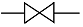
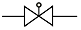
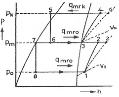
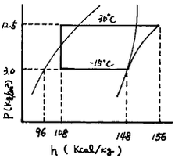
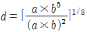
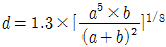
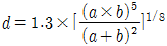
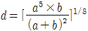

공조냉동기계기능사 (2007-01-28 기출문제)
1과목: 공조냉동안전관리
1. 산소압력 조정기의 취급에 대한 설명으로 틀린 것은?
- 작업 중 저압계의 지시가 자연 증가시 조정기를 바꾸도록 한다.
- 조정기는 정밀하므로 충격이 가해지지 않도록 한다.
- 조정기의 수리는 전문가에게 의뢰하여야 한다.
- 조정기의 각부에 작동이 원활하도록 기름을 친다.
(정답률: 90%)

2. 연소실내 역화 폭발 등으로부터 보호하기 위한 안전장치는?
- 압력계
- 안전밸브
- 가용마개
- 방폭문
(정답률: 83%)
3. 전기기계 기구에서 절연상태를 측정하는 계기로 맞는 것은?
- 검류계
- 전류계
- 절연저항계
- 접지저항계
(정답률: 72%)
4. 안전관리에 대한 가장 중요한 목적이라 할 수 있는 것은?
- 신뢰성 향상
- 재산보호
- 생산성 향상
- 인간존중
(정답률: 66%)
5. 다음 중 보호구를 사용하지 않고 할 수 있는 작업은?
- 산소가 결핍된 장소에서 작업시
- 전기용접 작업시
- 유해가스 취급 장소에서 작업시
- 물품보관 및 수송 작업시
(정답률: 92%)
6. 아크용접의 안전사항으로 틀린 것은?
- 홀더가 신체에 접촉되지 않도록 한다.
- 절연부분이 균열이나 파손되었으면 교체한다.
- 장시간 용접기를 사용하지 않을 때는 반드시 스위치를 차단시킨다.
- 1차 코드는 벗겨진 것을 사용해도 좋다.
(정답률: 93%)
7. 해머는 다음 어느 것을 사용해야 안전 한가?
- 쐐기가 없는 것
- 타격면에 흠이 있는 것
- 타격면이 평탄한 것
- 머리가 깨어진 것
(정답률: 83%)
8. 보일러 운전 중 역화의 원인이 아닌 것은?
- 흡입 통풍이 부족한 경우
- 과대한 연료 공급인 경우
- 연도 내에 미연소가 없는 경우
- 점화할 때 착화가 늦은 경우
(정답률: 67%)
9. 가스 용접작업 시 안전관리 조치사항으로 틀린 것은?
- 역화 되었을 때는 산소밸브를 열도록 한다.
- 작업하기 전에 안전기와 산소 조정기의 상태를 점검한다.
- 가스의 누설검사는 비눗물을 사용하도록 한다.
- 작업장은 환기가 잘되게 한다.
(정답률: 87%)
10. 후레온 냉동장치를 능률적으로 운전하기 위한 대책이 아닌 것은?
- 이상고압이 되지 않도록 주의 한다.
- 냉매부족이 없도록 한다.
- 습압축이 되도록 한다.
- 각부의 가스 누설이 없도록 유의 한다.
(정답률: 85%)
11. 다음 중 보일러 파열로 인하여 위험을 초래하는 현상과 관계가 없는 것은?
- 구조가 불량할 때
- 연료선택 부주의로 증발량이 높을 때
- 구성 재료가 불량할 때
- 제한압력을 초과해서 사용할 때
(정답률: 51%)
12. NH3를 충전할 때 지켜야 할 사항으로 적당하지 못한 것은?
- 화기를 취급하는 장소를 피한다.
- 충전시 적정 규정량을 충전한다.
- 가스가 다른 곳으로 발산되지 않도록 한다.
- 저장능력이 1만kg 이하인 경우 주택과의 거리는 10m이상의 거리를 가진다.
(정답률: 84%)
13. 다음 중 냉동제조시설에서 안전관리자의 직무에 해당되지 않는 것은?
- 안전관리 규정의 시행
- 냉동시설 설계 및 시공
- 사업소이 시설 안전유지
- 사업소 종사자 지휘 감독
(정답률: 74%)
14. 장갑을 끼고 할 수 있는 작업은?
- 연삭작업
- 드릴작업
- 판금작업
- 밀링작업
(정답률: 66%)
15. 다음 중 전기로 인한 화재 발생 시의 소화물로 가장 알맞은 것은?
- 모래
- 포말
- 물
- 탄산가스
(정답률: 53%)
2과목: 냉동기계
16. 다음 중 관의 지름이 다를 때 사용하는 이음쇠가 아닌 것은?
- 레듀서
- 부싱
- 리터언 밴드
- 편심 이경소켓
(정답률: 72%)
17. 수냉식 응축기에서 시간당 12,000kcal의 열을 제거하고 있을 때 18℃의 물을 매분 40ℓ 사용했다면 냉각수 출구온도는 몇 ℃가 되겠는가?
- 21℃
- 23℃
- 25℃
- 27℃
(정답률: 43%)
18. 다음 중 전자밸브를 작동시키는 주 원리는?
- 냉매의 압력
- 영구자석 철심의 힘
- 전류에 의한 자기 작용
- 전자밸브내의 소형 전동기
(정답률: 77%)
19. 배관의 부식방지를 위해 사용되어지는 도료가 아닌 것은?
- 광명단
- 알루미늄
- 산화철
- 석면
(정답률: 45%)
20. 열통과에 대한 설명 중 가장 바르게 설명한 것은?
- 열이 기체에서 기체로 이동하는 것이다.
- 열이 기체에서 고체로 이동하는 것이다.
- 열이 고체벽을 사이에 두고 유체“A"에서 유체”B"로 이동하는 것이다.
- 열이 고체벽 “A"에서 다른 고체벽 ”B"로 이동하는 것이다.
(정답률: 71%)
21. 팽창밸브에 관한 설명 중 틀린 것은?
- 팽창밸브의 조절이 양호하면 증발기를 나올 때 가스 상태를 건조포화 증기로 할 수 있다.
- 팽창밸브에 될 수 있는 대로 낮은 온도의 냉매액을 보내도록 하면 냉동능력이 증대한다.
- 팽창밸브를 과도하게 조이면 증발기 내부가 저압, 저온이 되어 증발기 출구의 가스가 과열되므로 압축기는 과열압축이 된다.
- 팽창밸브를 조절할 때는 서서히 개폐하는 것보다 급히 개폐하는 것이 빨리 안정된 운전 상태로 들어 갈 수 있으므로 좋다.
(정답률: 81%)
22. 펌프의 캐비테이션 방지책으로 잘못된 것은?
- 양흡입 펌프를 사용한다.
- 펌프의 회전차를 수중에 완전히 잠기게 한다.
- 펌프의 설치 위치를 낮춘다.
- 펌프 회전수를 빠르게 한다.
(정답률: 70%)
23. 다음 중 초저온에 가장 적합한 냉매는?
- R-11
- R-12
- R-13
- R-114
(정답률: 36%)
24. 냉각탑의 엘리미네이터(Eliminator)역할은?
- 물의 증발을 양호하게 한다.
- 공기를 흡수하는 장치다.
- 물이 과냉각되는 것을 방지한다.
- 수분이 대기 중에 방출하는 것을 막아주는 장치다.
(정답률: 73%)
25. 다음 중 냉동장치의 부속기기에 대한 설명에서 잘못된 것은?
- 여과기는 팽창밸브 직전에 부착하고 가스 중의 먼지를 제거하기 위해 사용한다.
- 암모니아 냉동장치의 유분리기에서 분리된 유(油)는 유류(油留)로 보내 냉매와 준리 후 회수한다.
- 액순환식 냉동장치에 있어 유분리기는 압축기의 흡입부에 부착한다.
- 후레온 냉동장치에 있어서는 유와 잘 용해되므로 특별한 유회수장치가 필요하다.
(정답률: 52%)
26. 냉매의 비열비가 크다는 것과 가장 관계가 큰 것은?
- 워터 자켓
- 플래시 가스
- 오일포밍 현상
- 에멀션 현상
(정답률: 41%)
27. 냉각수 입구온도 32℃, 냉각수량 1,000ℓ/min, 응축기 냉각면적 100m2, 그 전열계수가 720kcal/m2h℃이고 응축온도와 냉각수온의 평균온도차가 6.5℃일 때 냉각수 출구수온은 얼마인가?
- 31.8℃
- 35.5℃
- 39.8℃
- 44.6℃
(정답률: 43%)
28. 시퀀스제어에 속하지 않는 것은?
- 자동 전기밥솥
- 전기세탁기
- 가정용 전기냉장고
- 네온 싸인
(정답률: 74%)
29. 다음 중 할로겐화 탄화수소 냉매가 아닌 것은?
- R-114
- R-115
- R-134a
- R-717
(정답률: 63%)
30. 다음 중 유량 조절용으로 가장 적합한 밸브의 도시기호는?




(정답률: 46%)
31. 부하가 감소되면 서징(surging)현상이 일어나는 압축기는?
- 터보 압축기
- 왕복동 압축기
- 회전 압축기
- 스크루 압축기
(정답률: 50%)
32. 2단 압축 냉동장치에 있어서 흡입압력 진공도가 7cmHg.Gauge(Po), 토출압력이 13kg/cm2.Gauge(Pk)일 때 이상적인 중간압력은?

- 1.5kg/cm2.G
- 2.6kg/cm2.G
- 3.6kg/cm2.G
- 4.0kg/cm2.G
(정답률: 35%)
33. 냉매 중 NH3에 대한 설명으로 옳지 않은 것은?
- 누설검지가 대체적으로 쉽다.
- 응고점이 비교적 낮아 초저온용 냉동에 적합하다.
- 독성, 가연성, 폭발성이 있다.
- 경제적으로 우수하여 대규모 냉동장치에 널리 사용되고 있다.
(정답률: 55%)
34. 회전식 압축기의 설명 중 틀린 것은?
- 회전식 압축기는 조립이나 조정에 있어 고도의 공작 정밀도가 요구되지 않는다.
- 잔류가스의 재팽창에 의해 체적효율의 감소가 적다.
- 회전식 압축기는 구조가 간단하다.
- 왕복동식에 비해 진동과 소음이 적다.
(정답률: 56%)
35. 다음 중 냉동능력의 단위로 옳은 것은?
- kcal/kg·m2
- kcal/h
- m3/h
- kcal/kg·℃
(정답률: 52%)
36. 응축온도 및 증발온도가 냉동기의 성능에 미치는 영향에 관한 사항 중 옳은 것은?
- 응축온도가 일정하고 증발온도가 낮아지면 압축비가 증가한다.
- 증발온도가 일정하고 응축온도가 높아지면 압축비는 감소한다.
- 응축온도가 일정하고 증발온도가 높아지면 토출가스 온도는 상승한다.
- 응축온도가 일정하고 증발온도가 낮아지면 냉동능력은 증가한다.
(정답률: 29%)
37. 냉매에 따른 배관재료를 선택할 때 옳지 못한 것은?
- 염화메틸 - 이음매 없는 알루미늄관
- 후레온 - 배관용 스테인레스 강관
- 암모니아 - 압력배관용 탄소강 강관
- 암모니아 - 저온배관용 강관
(정답률: 27%)
38. 배관에 설치되어 관속의 유체에 혼입된 불순물을 제거하는 기기는?
- 트랩
- 체크밸브
- 스트레이너
- 안전밸브
(정답률: 63%)
39. 다음은 R-22 표준냉동사이클의 P-H선도이다. 압축일량은?

- 8
- 48
- 52
- 60
(정답률: 37%)
40. 간접 팽창식과 비교한 직접 팽창식 냉동장치의 설명으로 틀린 것은?
- 소요동력이 적다.
- RT당 냉매 순환량이 적다.
- 감열에 의해 냉각시키는 방법이다.
- 냉매 증발온도가 높다.
(정답률: 50%)
41. 증기압축식 냉동장치의 주요 구성요소가 아닌 것은?
- 압축기
- 흡수기
- 응축기
- 팽창밸브
(정답률: 56%)
42. 대기 중의 습도가 냉매의 응축온도에 관계있는 응축기는?
- 입형 쉘 앤드 튜브 응축기
- 이중관식 응축기
- 횡형 쉘 앤드 튜브 응축기
- 증발식 응축기
(정답률: 62%)
43. 전기저항에 관한 설명 중 틀린 것은?
- 전류가 흐르기 힘든 정도를 저항이라 한다.
- 도체의 길이가 길수록 저항이 커진다.
- 저항은 도체의 단면적에 반비례한다.
- 금속의 저항은 온도가 상승하면 감소한다.
(정답률: 60%)
44. 메탄계 냉매 R-22의 분자식은?
- CCl4
- CCl3F
- CHCl2F
- CHClF2
(정답률: 55%)
45. 다음 중 압축기와 관계없는 효율은?
- 체적효율
- 기계효율
- 압축효율
- 슬립효율
(정답률: 74%)
3과목: 공기조화
46. 냉방부하 계산시 실내에서 취득하는 열량이 아닌 것은?
- 기구, 조명 등의 발생열량
- 유리에서의 침입열량
- 인체 발생열량
- 송풍기로부터 발생한 열량
(정답률: 55%)
47. 원형 덕트의 지름을 사각 덕트로 변형시킬 때, 원형 덕트의 d와 사각 덕트의 긴 변 길이 a 및 짧은 변길이 b의 관계식을 나타낸 것 중 옳은 것은?




(정답률: 58%)
48. 공기에서 수분을 제거하여 습도를 조정하기 위해서는 어떻게 하는 것은 옳은가?
- 공기의 유로 중에 가열코일을 설치한다.
- 공기의 유로 중에 공기의 노점온도보다 높은 온도의 코일을 설치한다.
- 공기의 유로 중에 공기의 노점온도와 같은 온도의 코일을 설치한다.
- 공기의 유로 중에 공기의 노점온도보다 낮은 온도의 코일을 설치한다.
(정답률: 54%)
49. 복사난방에 대한 설명 중 옳은 것은?
- 복사난방의 공간 이용도는 낮다.
- 복사난방은 방열기가 필요하다.
- 복사난방은 쾌감도가 좋다.
- 복사난방은 환기에 의한 손실열량이 크다.
(정답률: 61%)
50. 공기조화방식을 공기방식, 수방식, 냉매방식, 공기-수방식으로 분류할 때 그 기준은?
- 열의 분배 방법에 의한 분류
- 제어방식에 의한 분류
- 열을 운반하는 열매체에 의한 분류
- 공기조화기의 설치방법에 의한 분류
(정답률: 55%)
51. 공업공정 공조의 목적에 대한 설명으로 적당하지 않은 것은?
- 제품의 품질 향상
- 공정속도의 증가
- 불량률의 감소
- 신속한 사무환경유지
(정답률: 61%)
52. 환기 공조용 저속덕트 송풍기로서 저항변화에 대해 풍량, 동력변화가 크고 정숙운전에 사용하기 알맞은 것은?
- 시로코 팬
- 축류송풍기
- 에어 포일팬
- 프로펠러형 송풍기
(정답률: 65%)
53. 다음 중 저속덕트 방식의 풍속계 해당되는 것은?
- 35~43m/s
- 26~30m/s
- 16~23m/s
- 8~12m/s
(정답률: 63%)
54. 방열기는 주로 개구부 근처에 설치하는데 이는 실내공기의 어떠한 작용을 이용한 것인가?
- 전도
- 대류
- 복사
- 전달
(정답률: 54%)
55. 다음 중 공기조화기의 구성요소가 아닌 것은?
- 공기 여과기
- 공기 가열기
- 공기 세정기
- 공기 압축기
(정답률: 61%)
56. 유효온도와 관계가 없는 것은?
- 온도
- 습도
- 기류
- 압력
(정답률: 74%)
57. 온수보일러에만 설치된 부속장치는?
- 팽창탱크
- 안전밸브
- 공기빼기밸브
- 압력계
(정답률: 40%)
58. 코일, 팬, 필터를 내장하는 유닛으로써, 여름에는 코일에 냉수를 통과시켜 공기를 냉각 감습하고, 겨울에는 온수를 통과시켜 공기를 가열하는 공기조화 방식은?
- 각층 유닛방식
- 덕트 병용 패키지 공조기 방식
- 유인 유닛 방식
- 팬 코일 유닛방식
(정답률: 64%)
59. 공조방식의 설치위치에 따른 분류 중 중앙식(전공기) 공조방식의 설명이 아닌 것은?
- 이동 보관이 용이하다.
- 많은 배기량에도 적응성이 있다.
- 공조기가 기계실에 집중되어 있어 관리가 용이하다.
- 계절변화에 따른 냉난방 전환이 용이하다.
(정답률: 67%)
60. 건구온도 30℃, 상대습도 50%인 습공기 500m3/h를 냉각코일에 의하여 냉각한다. 냉각코일의 표면온도는 10℃이고 바이패스 팩터가 0.1이라면 냉각된 공기의 온도(℃)는 얼마인가?
- 10
- 12
- 24
- 28
(정답률: 45%)